Your home in Mauritius, this two bedroom, one bathroom apartment is well-furnished and completely equipped. All rooms are on the first floor, above a similar apartment. Double doors open to a wonderful terrace with great views of the Indian Ocean to the West. At the East end of the open floor plan, there is a door to the stairs and the cane fields behind the building.
The building is located in a subdivision of Flic en Flac. This subdivision ("morcellement") named "Palmyre", is on the East edge of Flic en Flac, with cane fields to the East and the Indian Ocean to the West. All of the lots were purchased many years ago. People build houses when they have saved up enough money; mortgages are rarely taken to fund construction. This explains why fewer than half of the lots have homes, and why some of the homes are only partly built, with the owners waiting to save more money before continuing to build.
Here are some views as seen from the residence.
| 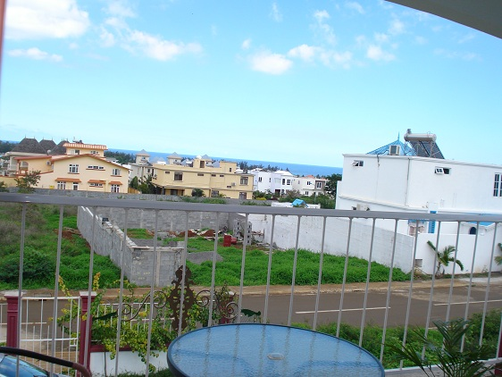 |
View of the ocean from the terrace. When all is quiet at night, you can hear the waves breaking against the coral reef. |
| View looking WestNorthWest from the terrace | |
| 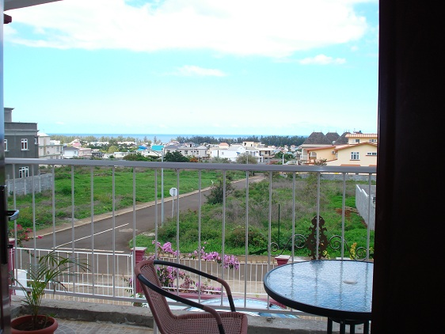 |
Looking towards the West, there is still more ocean view. |
| View looking WestSouthWest from the terrace | |
| 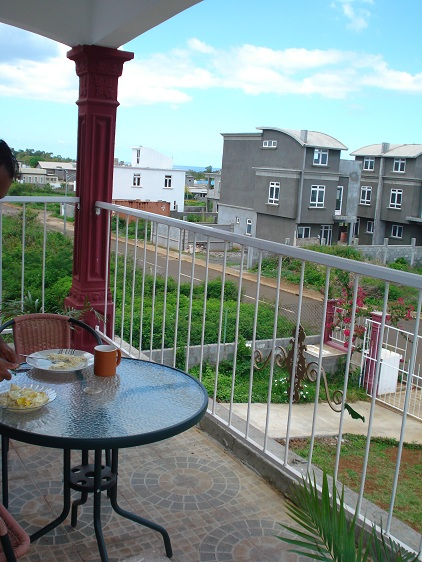 |
Looking SouthWest from the terrace as your meal is ready on the terrace. Beautiful weather year-round. |
| Terrace facing SouthWest | |
| 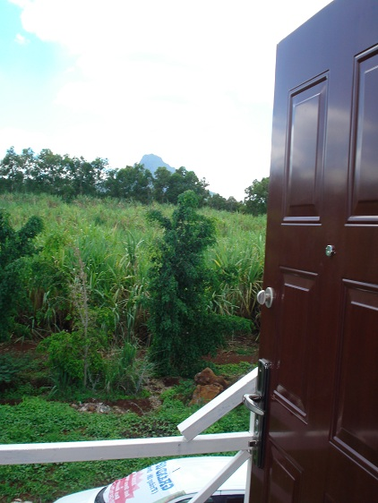 |
The back door opens onto the stairs from ground level, and behind the door up to the roof. There is a small back yard filled with plants and separated by a brick wall from the sugar cane field behind the building. In the background there is a great view of Montagne le Rempart which is a prominent landmark when arriving in Flic en Flac from most directions. |
| View out of the back door facing east | |
The inside has a single room which serves as living area, dining area, and kitchen.
| 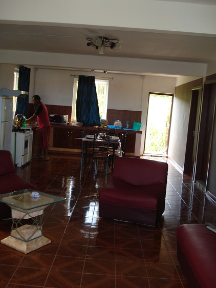 |
Coming in from the terrrace, you can see the spacious dining area and kitchen, just beyond the comfortable chairs of the living area. Notice the beautiful tile throughout. |
| Kitchen area seen from the living area facing East | |
| 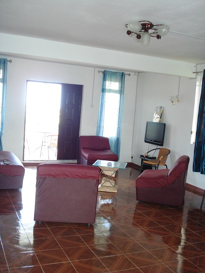 |
Looking West from the kitchen into the main living area, furnished with comfortable sofa and chairs, a coffee table and a flat screen television. |
| Living area seen from the kitchen area looking West | |
| 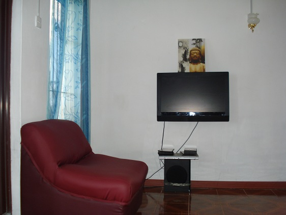 |
Detail view of the flat screen television in the living area. |
| Detail of living area facing North | |
Along the south side of the great room, there is a first bedroom, then a spacious bathroom, and finally a second bedroom.
| 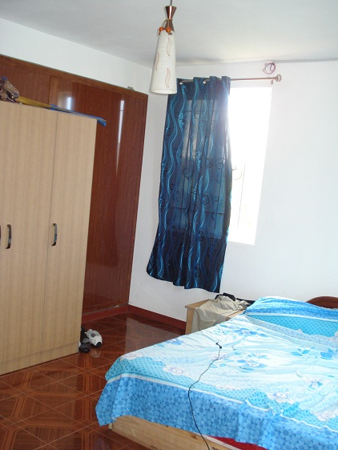 |
The first bedroom is furnished with an armoire, a chest of drawers, and a double bed. |
| First bedroom on SouthWest corner facing South | |
| 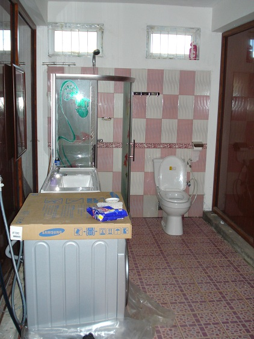 |
The bathroom has toilet, sink, shower stall, and brand new automatic washing machine. There is a clothesline on the roof for quick and natural drying of laundry. |
| Bathroom showing new washing machine | |
| 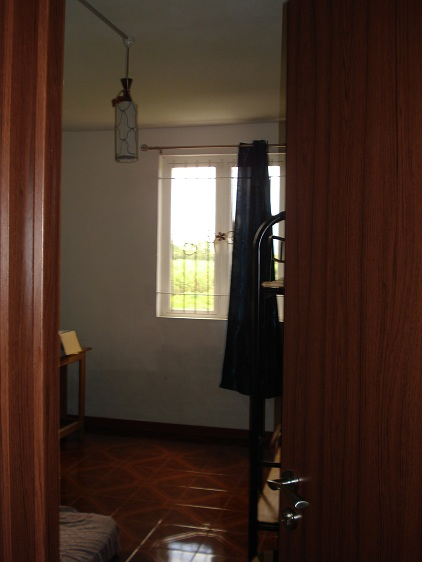 |
The second bedroom is furnished with bunkbeds. |
| The second bedroom on southeast corner facing South | |
This section places Palmyre First Floor on the map.
| 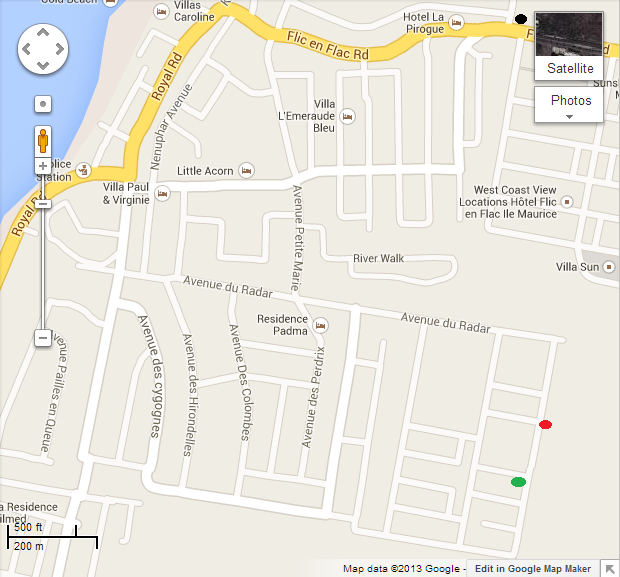 |
This road map of Flic en Flac shows the location of Palmyre First Floor (the red oval). Driving directions: coming from the right on the Flic en Flac road (heading West), veer to the left soon after the Total station (black oval); then take the first right down the hill to a roundabout (which has some statues of dodo birds and a large mango tree); turn left onto Avenue Petite Marie and continue to Avenue du Radar; turn left onto Avenue du Radar and drive all the way up the hill; turn right. Palmyre First Floor is the third building on the left (red oval). A couple of blocks further on the right is the Villa Tour (green oval). |
| Road map of Flic en Flac | |
| 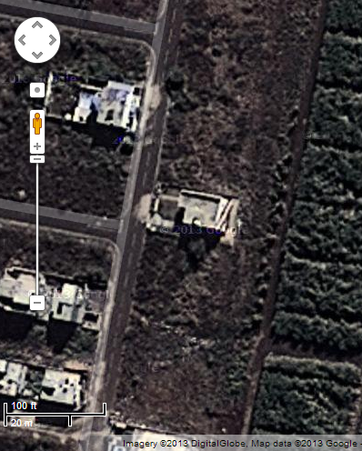 |
325 Morc. Palmyre is in the center of this satellite view. Notice that it is surrounded by vacant lots, with sugar cane fields to the East. The outdoor stairs are clearly visible, going up from the NorthEast corner of the building, with a landing at the back door of the first floor, and ending at the roof on the SouthEast corner. |
| Satellite view of Palmyre First Floor | |
When you decide to make Palmyre First Floor your home in Mauritius, please contact:
Pravin Persand{kind=link}
{kind=link}
{kind=link}
{kind=link}
{kind=link}
{kind=link}
{kind=link}
{kind=link}
{kind=link}
{kind=link}
{kind=link}
{kind=link}